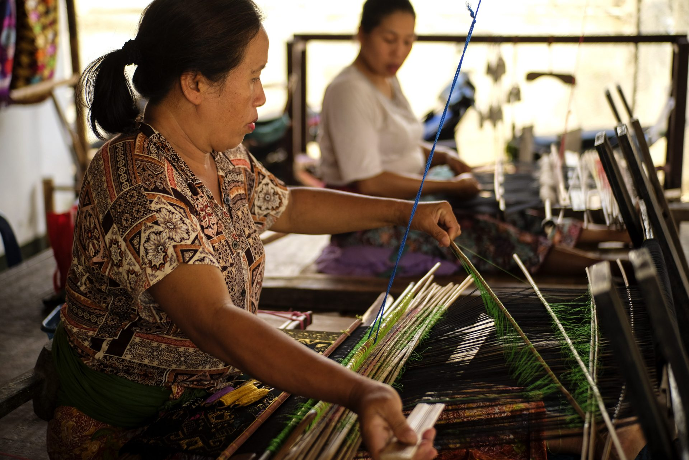

PENDAHULUAN
Kepulauan Indonesia telah menjadi pusat perkembangan abadi Asia sejak jaman dahulu. Banyak pulau-pulau yang dianugerahi berbagai kekayaan alam yang melimpah dan penduduknya diberkahi keahlian tradisi dengan berbagai kerajinan mulai dari batik, berbagai ukiran kayu, aneka logam, keramik, berbagai bentuk anyaman dan sebagainya. Semuanya ini patut kita syukuri sebagai anugerah Tuhan Yang Maha Esa. Cintailah kekayaan yang dimiliki negeri kita.

Alasan kerajinan berbasis media campuran banyak dilakukan adalah :
- Adanya kekurangan bahan baku atau memanfaatkan bahan baku yang tidak banyak jumlahnya.
- Menghindari bentuk yang monoton
- Meningkatkan estetika pada tampilan produk.
- Lebih terlihat modern karena dapat disukai oleh semua kalangan.